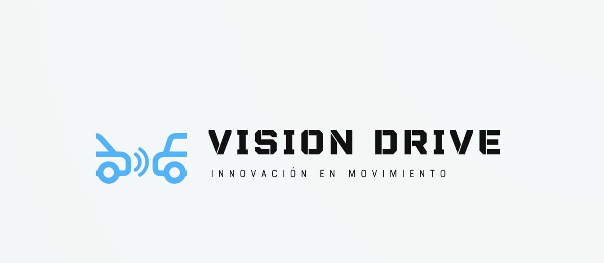

VISION Drive revoluciona la seguridad y comodidad en la conducción de vehículos de transporte. Con nuestro avanzado sistema de control de crucero adaptativo, ofrecemos una experiencia de manejo más segura y eficiente, pensada para quienes buscan tranquilidad al volante.
¿Por que Elegirnos?
- Seguridad activa: Detecta riesgos y frena automáticamente antes de que ocurra un accidente.-
- Menos estrés: Ajusta la velocidad automáticamente según la distancia con otros vehículos, reduciendo la fatiga en el tráfico.
- Eficiencia en la conducción: Mejora la fluidez del tránsito, especialmente en congestionamientos o autopistas.Ideal para empresas de transporte, logística y tecnología que quieran aumentar la seguridad y optimizar la conducción.
VISION Drive es tu próximo paso hacia la conducción inteligente.
